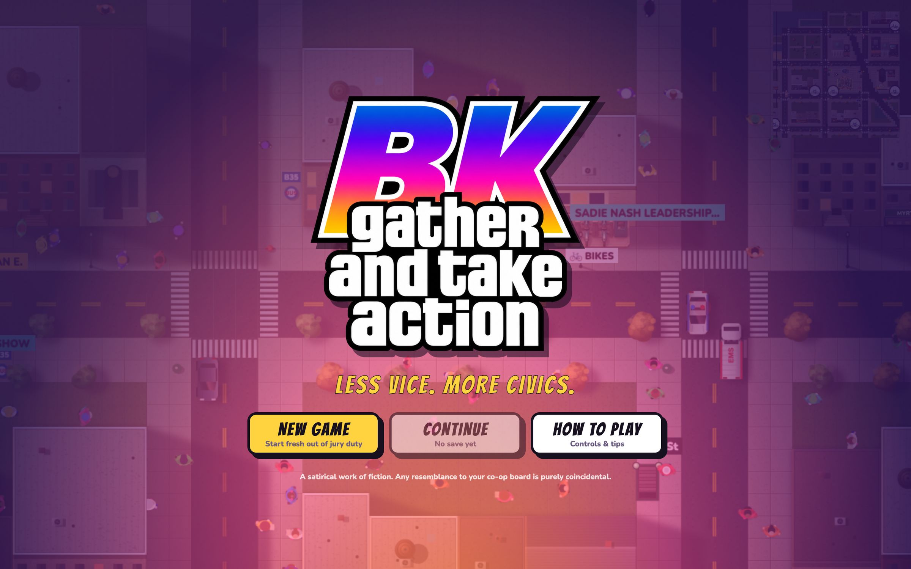
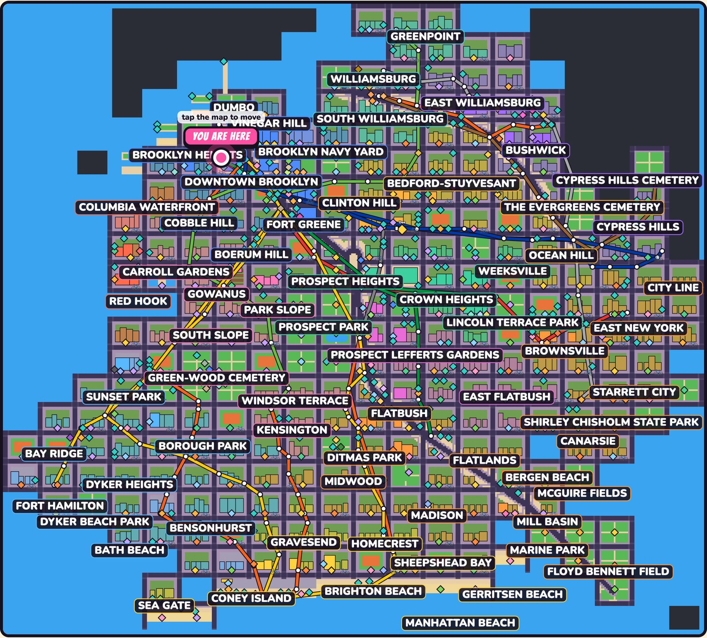
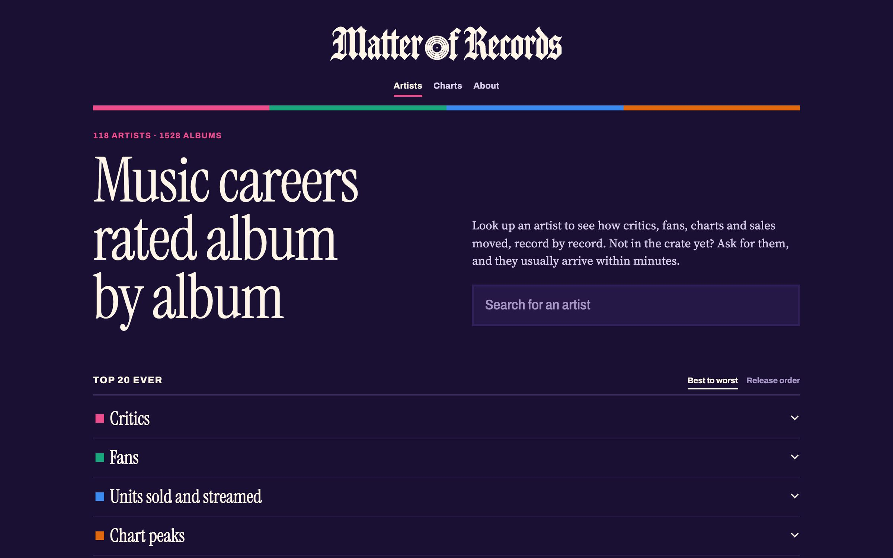
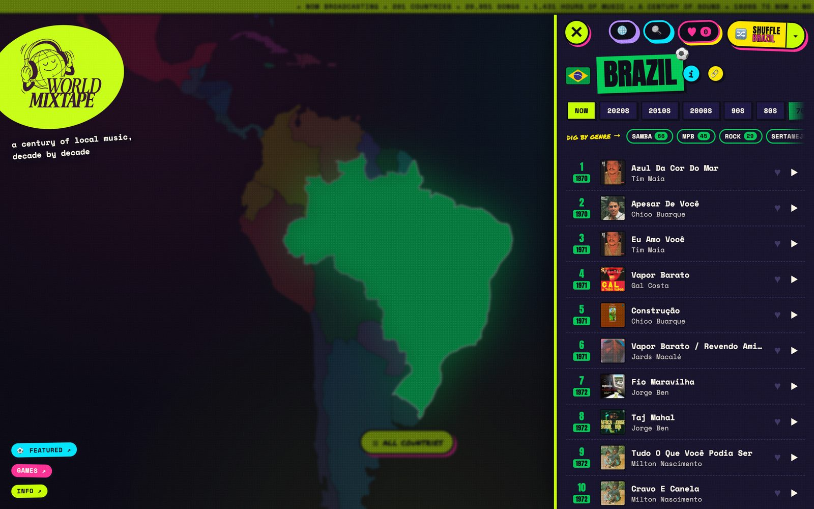
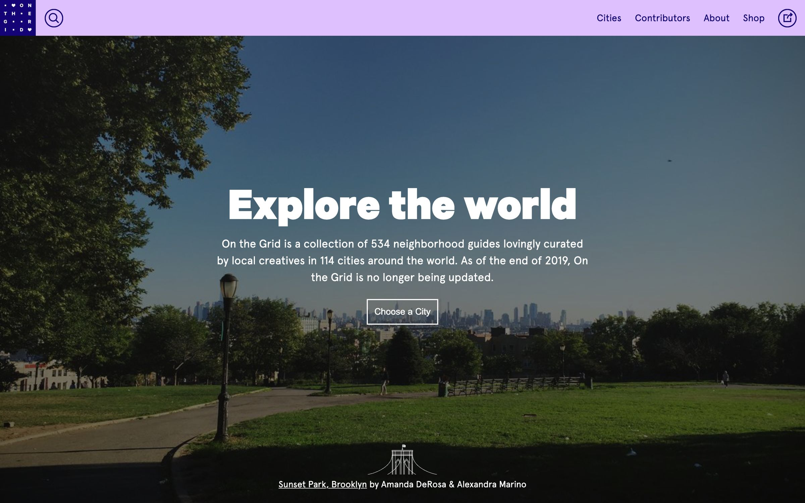
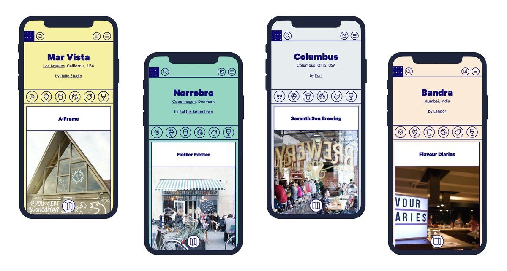
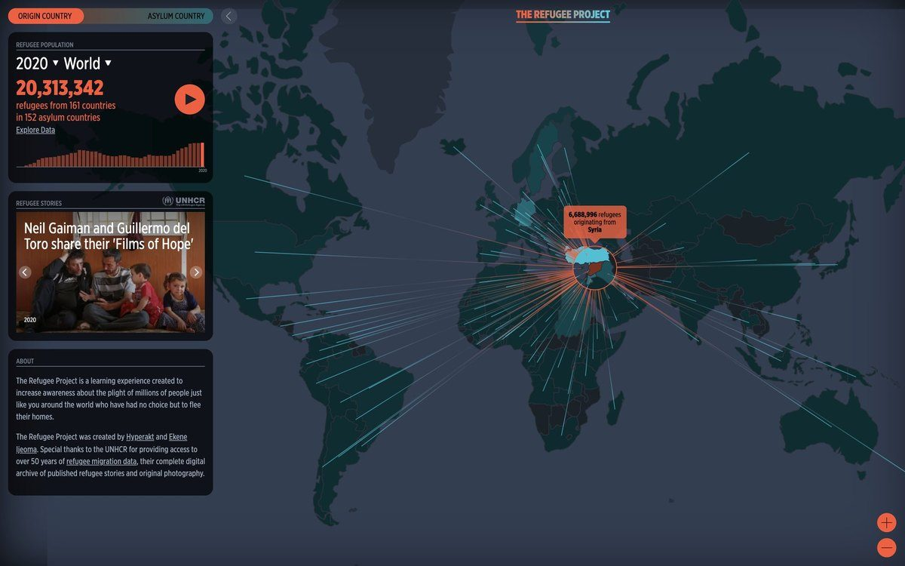
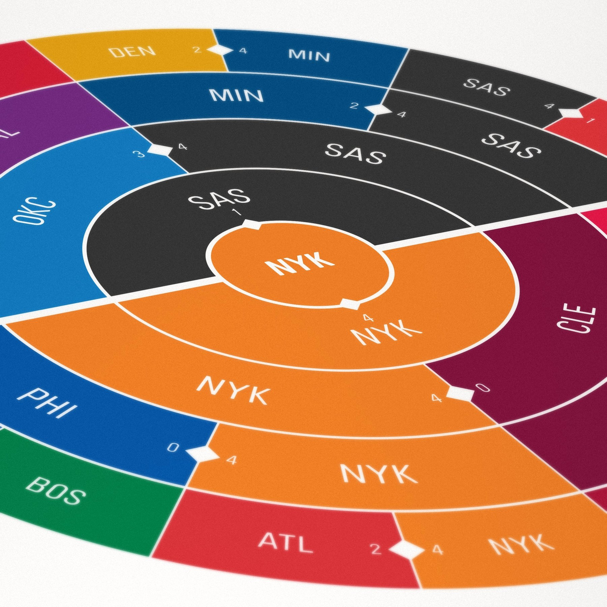
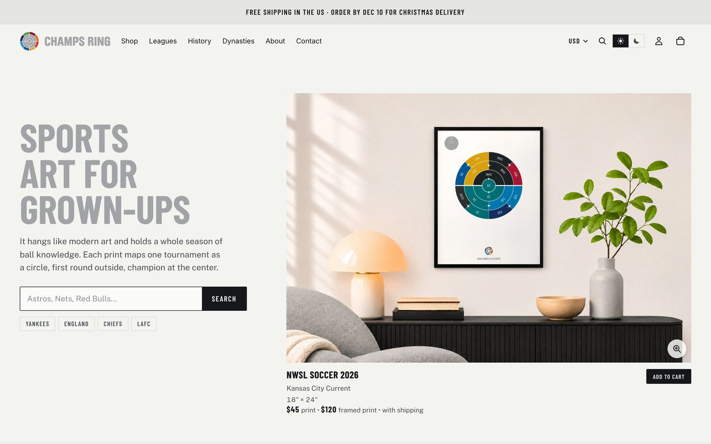

01
Gather and Take Action
An open-world satirical organizing game set in a fictional Brooklyn. Grand Theft Auto energy, except the crimes are mutual aid.
- Year
- 2026
- Type
- Browser game
- Live
- Visit site ↗
- More
- Project page →



Statement
Understanding gained by stepping back and looking out at the larger picture.
Each of these projects takes a whole subject, every refugee movement since 1975, every playoff since the first, a century of local music, an artist's career album by album, a city block by block, and pulls back far enough to see the full pattern. Then it lets you wander in.
01
Start from altitude. See the whole shape of a subject at once, before any single detail.
02
Leave nothing out. Every season, every album, every country, every neighborhood, so even the gaps become part of the picture.
03
No beginning, no end. Start anywhere, follow your curiosity and learn by exploring.
Selected work
2012–2026
01
An open-world satirical organizing game set in a fictional Brooklyn. Grand Theft Auto energy, except the crimes are mutual aid.


02
Music careers rated album by album. Critics, fans, sales and chart peaks for more than a hundred artists, side by side.

03
The world's local music, decade by decade. Tap a country on the map and travel its sound from the 1920s to now, local artists only.




04
A designer's guide to neighborhood gems. Started in Gowanus at Hyperakt, it grew to 534 guides in 114 cities, each curated by local creatives.




05
An interactive map of refugee migrations since 1975, built from UN data. Made at Hyperakt with Ekene Ijeoma; Gold, Information is Beautiful Awards 2014.



06
Every playoff as a radial bracket: champion at the center, first round outside. Drawn at Hyperakt in 2012, revived in 2026 as fine-art prints.



